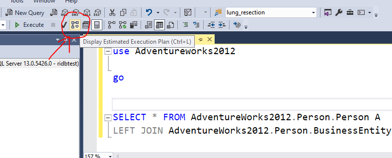
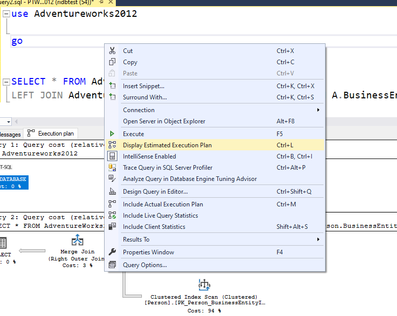
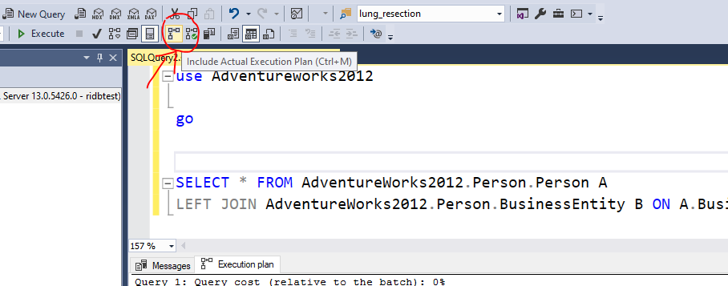
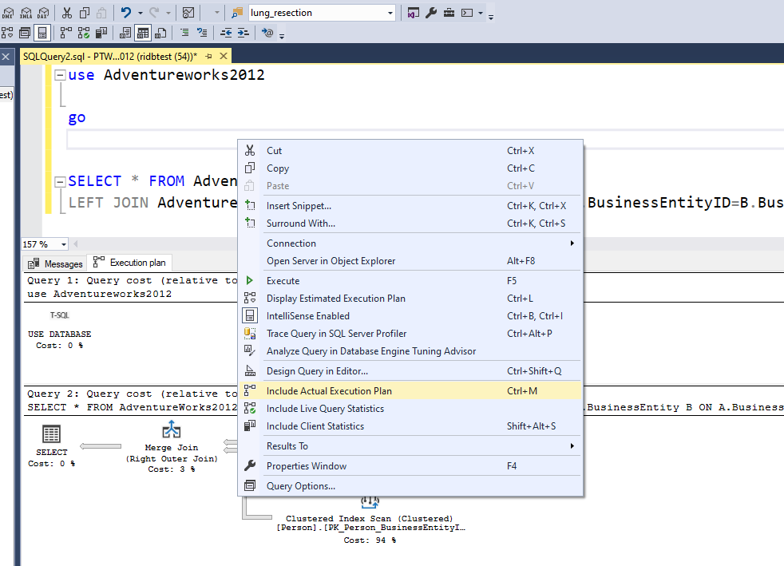
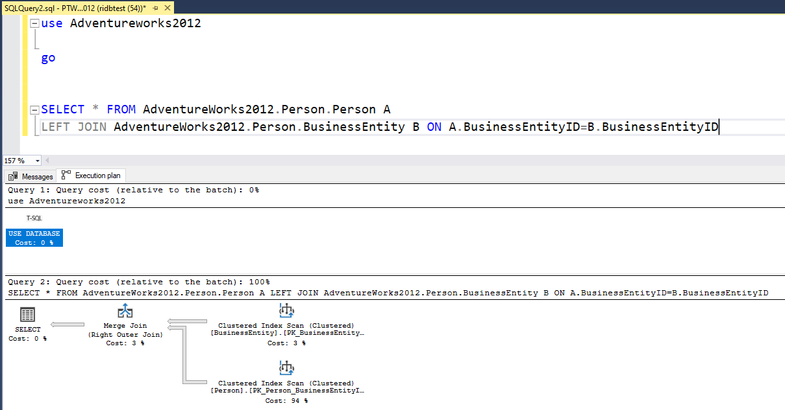
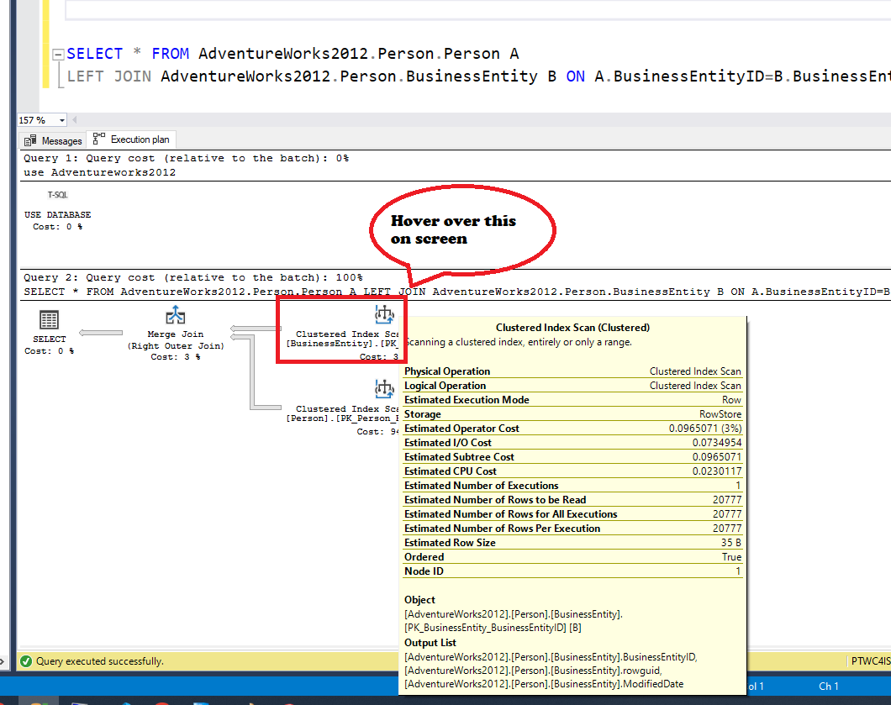

SQL- Execution Plan
As a data professional, it is crucial that we comprehend how to create effective queries that produce quicker results and how to tweak queries that operate slowly to improve performance. We must be aware of the logical processes carried out by the query processor in order to comprehend how the database engine functions in the background. Investigating the execution plans produced by the query processor will help with this. In SQL Server, the query optimizer creates an execution plan, which is a straightforward graphical depiction of the actions it does to determine the most effective method to produce a set of results.
What is an Execution Plan?
In SQL Server Management Studio, an execution plan is a visual depiction of the numerous stages required to retrieve results from the database tables. Following the execution of a query, the query processing engine immediately generates several execution plans and chooses the one that produces the best-performing results. There are specifically two sorts of execution plans:
Estimated Execution Plan
Actual Execution Plan
How to use Execution Plans
Estimated Execution Plan – As the name suggests, this type of execution plan is just a guess by the query processor about how the specific steps that are to be involved while returning the results. It is often generated before the query has been executed

Actual Execution Plan – The Actual Execution Plan is generated after the query has been executed. It shows the actual operations and steps involved while executing the query. This may or may not differ from the Estimated Execution Plan

Once you generate the execution plans as mentioned in the steps above, you’ll see something like the diagram below as in Figure. For estimated plans, it will generate as soon as you perform the step whereas for the actual execution plan it will be displayed only after the query has been executed.
After understanding what the execution plan shows , we will know how to imporve our queries , for example : use less where filter , like filters , remote server queries , use lesser functions etc.
Hover over the execution plan, once you see it in results to see the following as below. The plan is interpreted from right-to-left and top-to-bottom.
Physical Operation: These are the operators that implement the operation as directed by the logical operators. All the physical operators are usually object which perform an operation. Some examples are Clustered Index Scan, Index Seek etc.
Logical Operation: These operators describe the actual algebraic operation that is used to process the query. Examples are Right Anti Semi Join, Hash Join etc.
Actual Execution Mode: This is the actual execution mode that is used by the processing engine to execute the query. Examples – Row and Batch
Estimated Execution Mode: This is similar to Actual Execution Mode but shows the estimated value
Storage: This tells us how the query optimizer will store the results that are being extracted by the query
Number of Rows Read: This returns the total number of records that are being read by the operator from the table index
Actual Number of Rows: This tells us the total number of records that have been returned based on the condition in the WHERE clause
Actual Number of Batches: If the execution mode for the query is a batch, then it will list the number of batches being executed to fetch the results
Estimated I/O Cost: This tells us the cost of the input/output operations of the result set
Estimated Operator Cost: This is not an actual cost but relative information with respect to the other operators in the execution plan
Estimated CPU Cost: The cost that the CPU will incur in order to process the operation
Estimated Subtree Cost: The cost of the execution tree that is being currently read from right-to-left and top-to-bottom
Number of Executions: This tells us about the number of executions that the optimizer can handle in a single batch
Estimated Number of Executions: This is also similar to the Number of Executions just the estimated value
Estimated Number of Rows: The number of rows that the optimizer thinks will be returned by the operator
Estimated Number of Rows to be Read: The number of rows that the optimizer thinks will be read by the operator
Estimated Row Size: The storage size each row in the operator
Actual Rebinds: This tells us about how many times the reevaluation of the object must be done in order to process the operator
Actual Rewinds: This property tells us if there were any changes in the correlated values for the object that is being processed
Ordered: This property determines if the dataset on which the operation is to be performed in a sorted state or not
Node ID: It is the automatic assignment of a number in the order in which the operator is called in the execution plan reading from right-to-left and top-to-bottom